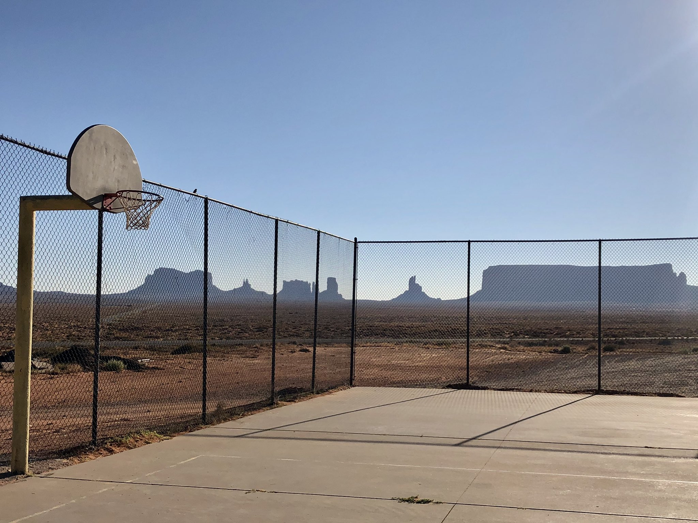

- Reading - I don't play favorites but Stieg Larsson, Haruki Murakami and J.K. Rowling are up there.
- Playing basketball or simply shooting hoops. I have an irrational love for scenic basketball courts, both urban and rural.
- Cooking - putting a podcast on and trying new recipes is one of my favorite ways to decompress.
- Traveling - I've been fortunate enough to take some pretty incredible trips, they have helped me shape who I am.
- Japanese culture - I'm very proud of my Japanese heritage. Shoutout mom.
- Road trips - I thrive on road trips.
- Investing - I admit I don't take action a lot, but I enjoy finding a company and product I believe in, researching their leadership and strategy, following their stock, and maybe, just maybe investing in them.
- Trying new bars and restaurants in Portland - I'm getting nostalgia just thinking about this, do I even know how to be social anymore?
- Hiking and backpacking - this is one of the main reasons I moved to the Pacific Northwest.
- Putting off all life responsibilities and devoting an entire Saturday or Sunday to watching movies, ordering multiple delivery meals, and not getting off the couch for 12 hours. Then regretting it the next day.